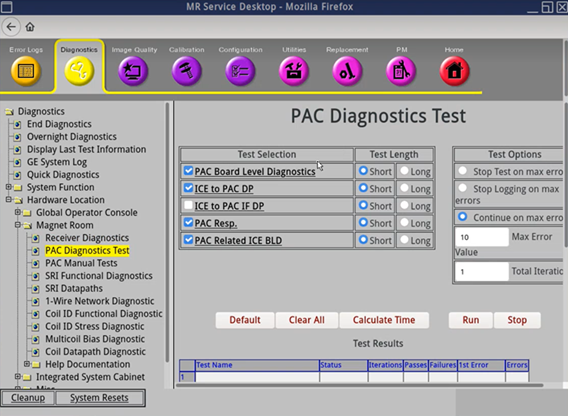

- 00000018WIA30F9CF20GYZ
- id_131063082.8
- Dec 3, 2025, 6:17:26 AM
Doing the Signal Processing Unit (SPU) to Physiological Acquisition Controller (PAC) IF loopback test
The Signal Processing Unit (SPU) to Physiological Acquisition Controller (PAC) IF loopback test verifies that the PAC TX and RX port on the ICE board (J38, J39) is functioning correctly.
Diagnostic link

Starting from software version(s) 30 or later:
- "PAC" in the software now refers to either PAC (for wired gating) or WPAC/PAWS (for wireless gating).
- "SPU" was changed to "ICE." They are equivalent.
- There is now no difference between Short and Long Test Length.
- SPU to FPGA DP, SPU Cardiac Diags, SPU Respiratory Diags are all now included in single diagnostic called PAC Related ICE BLD
Purpose
This test verifies that the PAC TX and RX port on the ICE board (J38, J39) works.
SPU definition: Signal Processing Unit for Physiological Gating.
Components tested
- The PAC TX and RX port on ICE board (J38, J39).
Requirements
- A connector cable: FO loopback line (46-287282G1 ) is required.
Test sequence
- Select SPU to PAC IF DP (MR29.1 or earlier) or ICE to PAC IF DP (software version 30 or later) from the PAC Diagnostics Test screen.
- Click Calculate Time to get an estimate of the time it will take to run the selected diagnostics.
- Connect the loopback cable to ICE J38 and J39.
- Click Run to initiate the test.
During this test, the SPU on the ICE board sends serial data to the PAC TX port. The SPU verifies that the correct data is returned to the PAC.
Results
-
Diagnostic results show a status of Pass or Fail. If you receive a Fail status, click GE System Log to view the error message. The system log records errors with the date, time, the process tested, and a detailed error message.
- If this test fails, perform the SPU -> FPGA test. Refer to SPU to FPGA DP.
- Verify that the PAC module has power.
- Feasible FRU replacement: If SPU to FPGA Loopback passed and SPU to PAC I/F Loopback failed, replace the ICE or loopback cable.